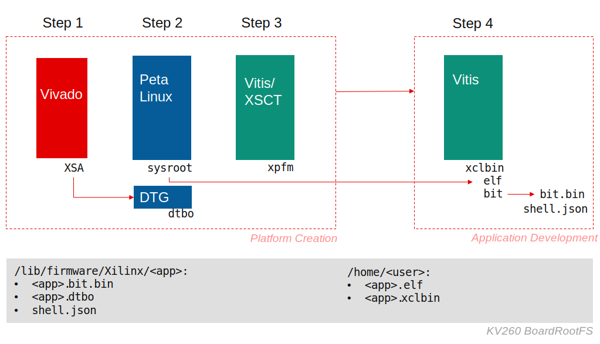

Vitis™ プラットフォームの作成チュートリアルxilinx.com の Vitis™ 開発環境を参照 |
KV260 での Vitis カスタム エンベデッド プラットフォームの作成¶
バージョン: Vitis 2021.1
Kria KV260 Vision AI スターター キットは、Kria K26 SOM の開発プラットフォームです。KV260 は、複雑なハードウェア設計知識を必要とせずに、高度なビジョン アプリケーション開発を実現できるように構築されています。これは、ZCU104 評価ボードに類似した UltraScale+ MPSoC テクノロジに基づいています。この例では、ZCU104 カスタム エンベデッド プラットフォーム作成例を KV260 Vision AI Starter Kit に適用します。
KV260 と ZCU104 の違いを強調するため、この例では、すべての MPSoC プラットフォーム間で共有される一般的な手順の説明を簡略化し、KV260 に特有の内容をさらに追加しています。手順の中で質問がある場合は、 ZCU104 カスタム エンベデッド プラットフォーム作成例を参照するか、Github Issues ページで質問してください。
注記: KV260 BSP は 2021.1 バージョンしかリリースされていないため、このチュートリアルの 2021.2 バージョンは飛ばします。このチュートリアルの次のリリースは 2022.1 になる予定です。
カスタム プラットフォーム プランニング¶
作成するプラットフォームでは、最終的に次のアプリケーションを実行できるようにします。
Vector Addition などの Vitis アクセラレーションの例
Vitis-AI アプリケーションは今後使用できるようになる予定です。
プラットフォームのハードウェア デザインでは、Vitis アクセラレーションの基本的サポートが提供されています。これは ZCU104 の例と類似しています。
ソフトウェア設定関しては、デバイス ツリー、カーネル、rootfs 設定など、KV260 BSP の提供するものをそのまま継承します。
Kria SOM アーキテクチャと Vitis アクセラレーションに関する考慮事項¶
Kria SOM には、アプリケーション開発者向けの使いやすいデザインがいくつか含まれています。システムを再起動せずにアプリケーションをリアルタイムでリロード可能であったり、FPGA および SoC でソフトウェアと同様の開発体験が提供されます。Linux を再起動せずに PL デザインを更新できるようにするには、Arm Cortex-A53 から Linux を起動し、Linux を使用して FPGA ビットストリームをロードします。ボードが常に正常に起動し、間違ってボードが操作不可能な状態にならないようにするため、Kria SOM のブート フローでは Linux を QSPI モードから起動させます。QSPI のブート ファームウェアは読み取り専用です。Linux は rootfs を SD カードにマウントします。SD カードの rootfs はユーザーが更新できます。
プラットフォーム作成の入門チュートリアルからは、Vitis プラットフォームとアプリケーション開発を次の手順に分割できることが理解できます。
Vivado でプラットフォーム ハードウェアを作成します。XSA ファイル (クロック、リセット、AXI インターフェイス、および割り込み信号とプロパティを含有) をエクスポートします。
PetaLinux を使用して、Linux カーネル、rootfs、デバイス ツリー、およびブート コンポーネントなどのプラットフォーム ソフトウェアを準備します。
Vitis でプラットフォームを作成し、すべてのハードウェア コンポーネントとソフトウェア コンポーネントを組み合わせ、XPFM 記述を生成します。
プラットフォームに対して Vitis でアプリケーションを作成します。Vitis により、ホスト アプリケーション xclbin、および sd_card.img が生成されます。
sd_card.img を SD カードに書き込むか、既存の SD カードのホスト アプリケーションと xclbin をアップデートします。
Kria SOM スターター キットには既成のブート イメージが含まれており、改良済みのブート シーケンスが含まれているので、Vitis プラットフォーム開発者およびアプリケーション開発者が上記の手順を省略できるようになっています。Kris プラットフォームとアクセラレーション アプリケーション開発者が実行する手順は、次のようにまとめられます。

| 手順 | 必要なアクション | 出力 | 飛ばした手順 |
|---|---|---|---|
| プラットフォーム ハードウェア | 手順 1 と同じ | XSA | 該当なし |
| プラットフォーム ソフトウェア | 手順 2 と同じ。XSA のプラットフォーム PL 用のデバイス ツリー オーバーレイを生成します。 | pl.dtsi, sysroot | 該当なし |
| プラットフォームの作成 | 手順 3 と同じ | Platform (XPFM) | 該当なし |
| アプリケーション作成 | 手順 4 と同じ。system. bit を bit. bin に変換し、dtboを生成 | ホスト アプリケーション、XCLBINT、bit.bin、dtbo | 該当なし |
| ファイルを転送して実行 | scp を使用して、生成されたファイルを SD カード上の Linux パーティションにコピー | sd_card.img を書き込み |
注記: 手順 2 では PetaLinux で多くの出力コンポーネントが生成されますが、この場合の価値のある出力は sysroot だけです。これはホスト アプリケーションのクロスコンパイルに使用されます。KV260 スターター キットのブート イメージは固定されているため、ユーザーが FSBL などのブート コンポーネントを生成する必要がありません。
次の章では、これらの手順の詳細について説明します。
詳細手順チュートリアル¶
次のページから、プラットフォーム作成手順を示します。各ページで、プラットフォーム作成プロセスの主な手順が 1 つずつ説明されています。
まずは、手順 1: Vivado デザインから始めます。
参考資料¶
プラットフォーム例
Vitis エンベデッド プラットフォーム ソース GitHub リポジトリの ZCU102 および ZCU104 ベース プラットフォームのソース コード
Copyright© 2021 Xilinx